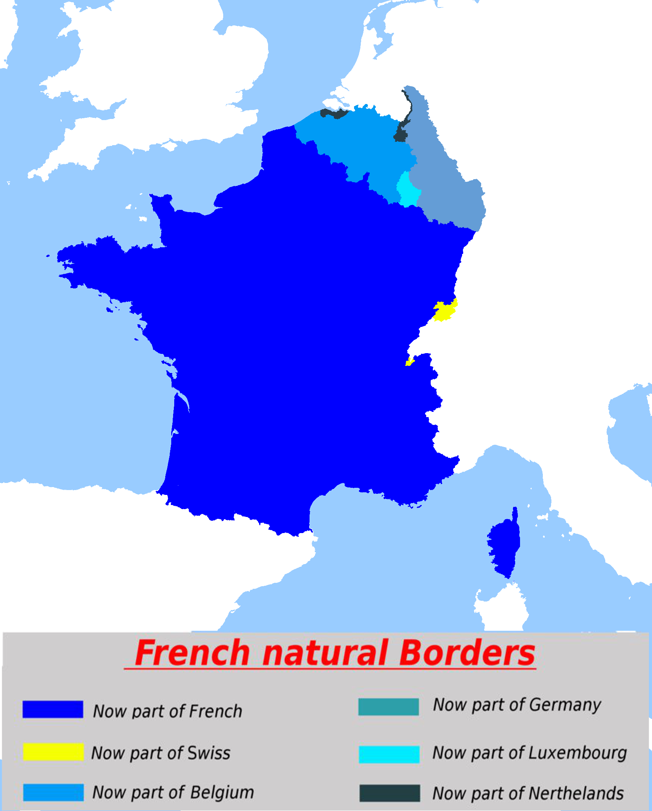
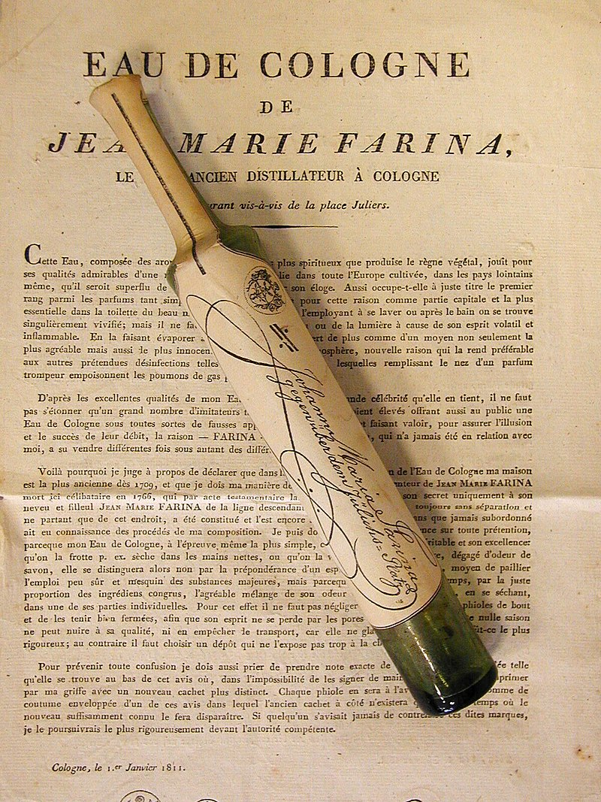
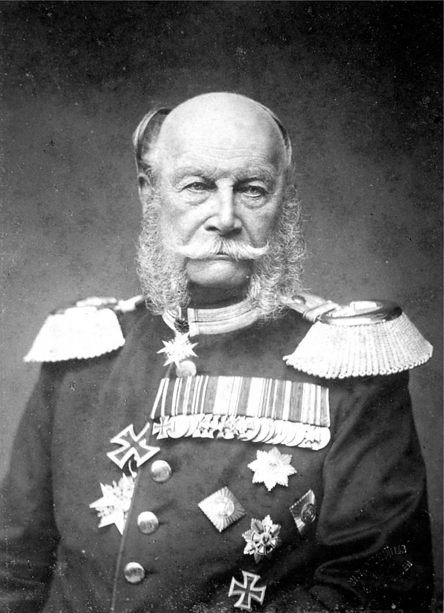
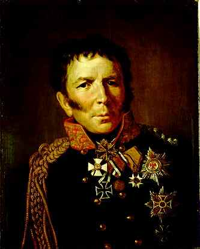

결정을 못하는 리더 - 못난이 프리드리히
게시: 2022-04-04T06:30:22+09:00
1812년 12월 14일, 원정군을 버려두고 파리로 달리던 나폴레옹의 썰매는 프로이센이 그토록 반환을 간청하던 글로가우 요새를 통과했습니다. 나폴레옹이 홀로 파리로 돌아가고 있다는 소문과 함께 나폴레옹의 원정군이 몰살을 당했다는 소식이 프로이센 일대에 빠르게 퍼졌습니다. 프로이센의 열혈 애국자들은 지금이라도 당장 나폴레옹을 끝장내고 프로이센의 영광을 되찾아야 한다고 목소리를 높이며 흥분했습니다. 그러나 프로이센의 운명에 대해 최종 책임을 져야 하는 국왕 프리드리히 빌헬름 3세에게는 모든 것이 너무나 불확실하고 불안했습니다. 200년이 지난 지금에야 1812년 러시아 원정 실패가 결국 나폴레옹의 패망으로 이어진다는 것이 당연하게 받아들여집니다만, 당시로서는 그렇지 않았습니다. 일단 나폴레옹의 그랑다르메가 입은 피해가 어느 정도인지가, 적어도 1812년 말까지는 불분명했습니다. 나폴레옹의 군대가 궤멸 상태에 빠졌다는 소식이 거의 사실로 굳어지는 듯 했지만, 러시아군의 피해도 그에 못지 않아서 도저히 비스와 강을 넘어서 중부 유럽으로 진격할 형편이 아니라는 소문도 꽤 그럴싸 했습니다. 넓은 지역에 흩어진 수십만의 사람이 겪은 일들이 제각각 다 달랐기 때문에 어느 누구의 경험담이 보편적인 일이라고 보기도 어려웠고, 그 사람이 과연 진실을 이야기하는지도 몰랐습니다. 요즘 먼 나라 전쟁에 대해 TV와 인터넷을 통해 사진과 동영상이 쏟아져도 그걸 다 믿을 수는 없는 것을 생각해보면, 당시 프로이센 정부가 느꼈을 혼란을 짐작할 만 합니다. 게다가 러시아가 과연 어디까지 쳐들어올 생각인지도 불분명했습니다. 만약 러시아가 프랑스군을 몰아낸 것으로 만족하고 전쟁을 끝낸다면, 이제 나폴레옹은 끝장이라고 설레발을 떨며 반란을 일으키는 것은 프로이센 호헨촐레른 왕가의 폐지로 이어질 수 있었습니다. 그리고 러시아군이 독일까지 쳐들어온다고 하더라도, 과연 그들의 의도가 어떤 것인지도 불분명했습니다. 분명히 공식적으로 프로이센은 나폴레옹의 동맹국으로서 러시아를 침공한 그랑다르메의 일원이었습니다. 그러니 러시아군이 쳐들어와서 프로이센의 영토, 특히 리투아니아에 가까운 발트해 연안 동프로이센을 점령하고 러시아 영토로 삼겠다고 할 수도 있었습니다. 실제로 러시아군 총사령관인 쿠투조프에게 이제 전쟁은 끝난 것이었고, 남은 것은 그 영광을 누리며 파티를 즐기는 것 뿐이었습니다. 쿠투조프는 1월말 부관 톨(Karl Wilhelm von Toll)에게 지시하여 향후 유럽에서의 작전계획을 작성하게 했는데, 그 내용은 유럽에서의 전쟁은 영국-오스트리아-프로이센이 알아서 수행하고 러시아군은 그냥 보조 병력으로 참전하는 정도였습니다. 그러나 다행인지 불행인지 짜르 알렉산드르의 생각은 달랐습니다. 독실한 러시아 정교의 신앙심에 기초하여 나폴레옹을 악으로 본 그는 싸움을 계속 이어가서 프랑스군을 완전히 격파하는 것을 목표로 했습니다. 다만, 그런 알렉산드르조차도, 적어도 1813년 초까지는, 프랑스를 라인강-알프스-피레네-스헬트(Scheldt)의 자연 국경으로 되돌리는 것을 목표로 했을 뿐이고 파리까지 쳐들어가서 나폴레옹을 폐위시키는 것까지는 전혀 생각하지 않고 있었습니다. 그러니까 기본적으로 나폴레옹이 유럽 대륙 전체를 좌지우지하는 것을 막고자 했을 뿐, 알렉산드르가 목표로 했던 것은 '유럽의 기존 체제 유지'였던 것입니다.

(프랑스의 자연적 국경선이라는 개념은 1642년에 리셜리외(Richelieu) 추기경이 처음 내놓은 것이라고 하는데, 그때만 하더라도 벨기에는 물론 라인강 유역까지 다 차지해야 한다는 열망 때문에 나온 것입니다. 그런데 나폴레옹은 그걸 넘어서 훨씬 더 많은 땅을 차지한 셈이지요. 지금은 벨기에는 독립했고, 라인강 하류의 좌안 일부는 독일 땅이 되었습니다.)

(전통적으로 프랑스 도시였다가 지금은 독일 땅이 된 곳이 바로 쾰른(Köln)입니다. 지금도 쾰른의 영어식 이름은 독일어가 아니라 콜론(Cologne)라는 프랑스어입니다. 보통 향수를 일컫는 오-드-콜로뉴(Eau de Cologne, 직역하면 '콜로뉴의 물', 일본식 한국말로는 오데코롱)라는 말도 바로 이 도시에서 나왔습니다. 1709년 이탈리아 출신의 파리나(Giovanni Maria Farina)라는 사람이 알코올과 감귤류를 이용하여 만들었답니다. 나오자마자 유럽 각국의 왕족들을 사로잡은 대히트 상품이었다고 합니다. 사진은 1811년 당시 파리나가 만들어 팔던 오-드-콜로뉴 제품입니다.) 프리드리히 빌헬름이 프랑스와 러시아 등의 세세한 정보를 실시간으로 다 받아보고 있다고 해도 어느 쪽에 붙는 것이 좋을지 판단하기 힘들었을 것입니다. 그런데 실시간은 커녕 그가 받아보는 정보는 그냥 소문 정도에 불과했습니다. 나폴레옹이나 뮈라가 그랑다르메의 배치나 피해 현황 등에 대한 보고서를 작성해서 프리드리히 빌헬름에게 보내주지는 않았으니까요. 이렇게 프리드리히 빌헬름이 결정을 내리지 못하고 있는 사이, 프리드리히 빌헬름 대신 그의 부하가 결과적으로 결정을 내리는 사건이 벌어졌습니다. 바로 12월 30일 요크(Ludwig Yorck von Wartenburg) 대공의 타우로겐(Tauroggen, 리투아니아어로 토레게(Tauragė)) 조약이었습니다. 막도날의 제10 군단 소속으로 리가(Riga) 방면에 배치되어 있던 요크 대공의 프로이센군 2만 명이, 본국의 허가를 받지 않고 단독으로 러시아군과 체결한 휴전 협정은 타우로겐 조약의 배경에 대해서는 온갖 추측과 뒷이야기가 많습니다. 훗날 통일 독일제국의 초대 황제가 되는 빌헬름 1세(Wilhelm Friedrich Ludwig)는 당시 15세였는데, 1869년에 주장한 것에 따르면 그의 아버지인 프리드리히 빌헬름이 요크 대공의 부관인 헨켈(Henckel von Donnersmarck)이 찾아와 타우로겐 조약에 대해 보고할 때 바로 그 현장에 본인이 있었다고 합니다. 소년 빌헬름 1세가 보기에 그의 아버지는 헨켈로부터 그 보고를 받을 때 근래 보기 드물게 흡족하다는 듯한 표정이었는데, 정작 서재에서 나와 다른 신하들과 공개적으로 이야기할 때는 무척 침통한 목소리로 요크 대공이 러시아인들에게 항복했다고 발표하여 어린 자신이 무척 어리둥절하게 생각했다고 합니다. 빌헬름 1세처럼, 프리드리히 빌헬름 국왕 편에서 이야기하는 사람들은 훗날 이 모든 것이 프리드리히 빌헬름이 그린 큰 그림 하에서 짜고 친 고스톱 같은 것이었다고 치장하는 분위기입니다.

(초대 독일 황제, 진짜 카이저인 빌헬름 1세입니다. 그는 1806년 예나-아우어스테트 전투에서 나폴레옹에게 패배한 프리드리히 빌헬름을 따라 동프로이센 중에서도 구석진 곳인 메멜(Memel) 지방으로 도망칠 때 데리고 간 식솔 중 하나였습니다. 당시 그의 나이는 9살에 불과했는데, 그 피난길에서 그는 어머니 루이자 왕비와 함께 초라한 헛간에서 물도 제대로 못 마시는 등 무척 고생을 했다고 합니다. 그랬던 그가 1870년 나폴레옹 3세를 포로로 잡고 보무당당하게 파리에 입성하여 초대 독일 황제가 될 때 기분이 어땠을까요?) 그러나 그런 이야기들은 모두 국왕의 체면을 살려주려고 꾸며낸 이야기에 불과합니다. 가령 빌헬름 1세가 보았다는 헨켈이 요크 대공의 사령부를 떠난 것은 타우로겐 조약이 체결되기 3일 전인 12월 27일이었고, 그때까지만 해도 요크 대공조차도 러시아군과의 휴전을 전혀 결정하지 못한 상황이었습니다. 요크 대공이 헨켈을 본국으로 보낸 이유도 '이런 상황에서 어떻게 할까요'라는 지시를 구하기 위해서였습니다. 실은 그 전에도, 요크 대공은 부관인 자이들리츠(Anton Friedrich von Seydlitz) 소령을 본국으로 보내어 '프랑스군이 후퇴하고 있고 러시아군은 자꾸 자기에게 프랑스군을 배신하고 러시아군과 같이 싸우자고 권유하는데, 자신이 어떻게 하는 것이 좋겠는가'라고 물었습니다. 자이들리츠 소령은 이미 러시아군에 의해 프로이센군의 퇴로가 끊긴 12월 29일에 돌아왔는데, 러시아군이 통과시켜준 자이들리츠 소령이 들고온 국왕의 답변은 하나도 도움이 되지 않았습니다. 그 내용은 전혀 구체적이지도 않고 러시아군의 회유에 대해서는 아무런 언급조차 하지 않으면서 '신중을 기해 행동하라'는, 그야말로 하나마나한 헛소리였던 것입니다. 그야말로 어떤 결정이든지 잘되면 국왕의 공이고, 잘못되면 요크 대공의 죄라는 식의 태도였습니다. 아시다시피 고뇌하던 요크 대공은 결국 다음날 타우로겐 조약을 맺어 러시아군과의 단독 강화에 합의했습니다. 그리고 이 소식이 전해지자 프리드리히 빌헬름은 대노하여 요크 대공의 사령관직 해임 및 군법재판 회부를 통보하는 전령을 요크 대공에게 보냈습니다. 그러나 이번에는 러시아군이 그 전령의 통과를 저지했습니다. 당시 베를린의 요새에는 프랑스군 수비대가 주둔하고 있는 상황이었습니다. 그러니 적어도 겉으로는 요크 대공의 배신이 어디까지나 개인의 일탈일 뿐, 프리드리히 빌헬름은 일편단심 나폴레옹 편이라고 동네방네 떠들 필요는 있었습니다. 하지만 당시 상황을 비교적 객관적으로 평가하고 기록했던 보이엔(Hermann von Boyen) 대령에 따르면 당시 국왕의 분노는 진심이었고, 요크로부터 군인다운 기계적 복종을 기대했던 그는 요크가 스스로 정치적인 결정을 내린 것을 공공연한 반란 행위로 간주했다고 합니다.

(보이엔은 프로이센군 대령이었는데 1811년 말 프리드리히 빌헬름이 나폴레옹의 손을 잡기로 하자 그에 반발하여 군직을 버리고 클라우제비츠 등과 함께 러시아로 넘어간 사람이었습니다. 1813년 프로이센-러시아의 동맹 체결에는 보이엔이 연락장교로 부지런히 오간 것이 큰 기여를 했습니다. 개혁 세력 중 하나였던 그는 종전 이후 국방부 장관이 되어 국민방위군 강화를 추진하다가 그에 반대하는 수구세력에게 밀려나 은퇴했으나, 다음 왕인 프리드리히 빌헬름 4세 때 다시 등용되어 결국 원수 계급까지 승진하고 1848년 초에 사망했습니다.) 그 내막이야 어쨌건 일이 이 정도 되었으면, 좋건 싫건 이제는 결정을 내려 러시아의 손을 잡는 것이 맞을 것입니다. 전체 프로이센군의 절반에 해당하는 2만의 프로이센 군단이 통째로 러시아군과 손을 잡았고, 그랑다르메의 패잔병들을 지휘하던 뮈라가 그 때문에 쾨니히스베르크를 유지하지 못하고 훨씬 후방까지 계속 후퇴하게 되었으니까요. 그러나 프리드리히 빌헬름은 아직도 결정을 내리지 못했습니다. 그는 프로이센의 미래를 결정지어야 할 순간이었던 1월 초, 그는 결정은 내리지 않고 어디론가 그의 심복을 비밀리에 파견했습니다. 대체 어디로, 무엇을 위해 보냈을까요? Source : The Life of Napoleon Bonaparte, by William Milligan Sloane Napoleon and the Struggle for Germany, by Leggiere, Michael V
https://en.wikipedia.org/wiki/William_I,_German_Emperor https://en.wikipedia.org/wiki/Hermann_von_Boyen https://www.deviantart.com/rheinbund/art/French-natural-borders-511054091 https://en.wikipedia.org/wiki/Natural_borders_of_France https://en.wikipedia.org/wiki/Eau_de_Cologne